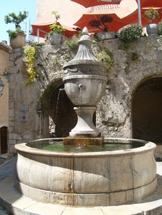
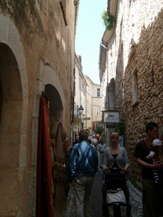
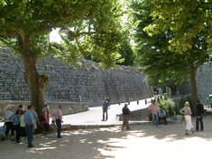
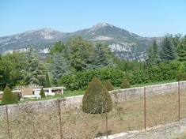
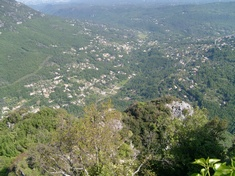
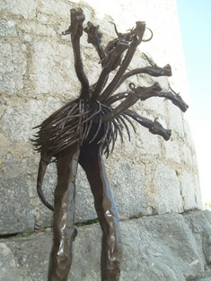
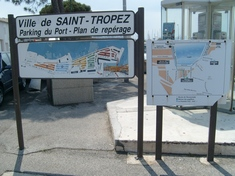
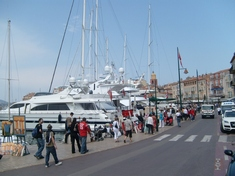
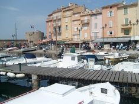

Visiting the French Riviera (Part IV)
 | | The Saint Paul de Vence village stands high up on a hill. |
Apart from Cannes, Nice and Monaco there are many other places of interest in the French Riviera.
If you still have time after visiting the three principal cities above you can head for a number of other lesser-known destinations such as Saint Paul de Vence or Gourdon, both of which are medieval villages, and Grasse, the perfume town. Then there is the small but world-renowned port of Saint-Tropez. Near to Saint-Tropez is Port Grimaud, a sort of water town with numerous bridges.
Here are some photos and descriptions of them.
Saint Paul de Vence is a quaint little medieval village in the French Riviera which is of particular interest to art lovers. Built at the very top of a hill and surrounded by ramparts it is about 26 kms from Cannes. It's home to quite a number of famous artists, painters and writers (the most famous among them being Marc Chagall, who was buried in St. Paul's cemetery) and its narrow alleys are lined with mostly small-scale art gallery shops. It was also here in Saint Paul de Vence that Yves Montand and Simone Signoret met for the first time. While here art buffs should make it a point to visit the recently renovated Maeght Foundation nearly a km away.
Note: Click on any photo below to reproduce its original size and press the F11 button on your keyboard to fill the whole screen (press F11 again to go back to where you were). All the photos were taken in May 2010.
| SAINT PAUL DE VENCE IN PICTURES |
|---|

This fountain is a landmark in the village. |

One of its numerous narrow but picturesque alleys. |

The ramparts that surround the Saint Paul de Vence village. One of its most prominent inhabitants was Marc Chagall, considered to be "the last survivor of the first generation of European modernists." He was buried in the Saint Paul de Vence cemetery here. |
From Saint Paul de Vence you can continue on to Gourdon, another quaint and rocky hillside village, standing 760m high. On the way you will pass by the Pont-du-Loup village. Watch out for a couple of scenic cascades on the way. Driving up there could be a vertiginous experience so be warned! From here one can have a magnificent and unobstructed view of the French Riviera, all the way from Nice to Theoule.

A breathtaking view of the surrounding vegetation and mountains. |

Another panoramic view from Gourdon. |

A touch of modernity at a street in the medieval village of Gourdon. |
 | | Seafront view of Saint-Tropez. |
Saint-Tropez (pronounced tro-pay) owes its world-wide reputation mainly to Brigitte Bardot, France's own Marilyn Monroe, who lived here much of her life. Though it started out as a quiet fishing village, the port at Saint-Tropez now attracts many posh and luxurious yachts and with them, of course their opulent owners. No wonder Saint-Tropez is reputed to be a place for jet-setters and millionaires! On the menu of a terrace bar here I was not able to find "coffee" (or rather café) mentioned anywhere. Instead there was café gourmand (which in simple terms means coffee with cake) costing 12 euros (15 USD). To use the toilet in some of the posh places be prepared to leave a 10-euro banknote as tips. But then this is Saint-Tropez and there is a price to pay for being able to rub shoulders with the likes of Beyoncé, Bruce Willis or Alicia Keys!
However, despite being the playground of the wealthy (or rather because of it), Saint-Tropez keeps on attracting hordes of not-at-all-wealthy but curious visitors, especially in summer.

Signboard in the port of Saint-Tropez. |

The busy port of Saint-Tropez with its numerous luxurious yachts. |

Next to the port are numerous restaurants and souvenir shops. |
Port Grimaud, the water town |
Near to Saint-Tropez is Port Grimaud, a sort of water town with numerous bridges, a little Venice of sorts. A barge ride along its waters offers the visitor an interesting experience.
It is said that two-thirds of the entire French perfume production comes from its factories in the little town (some would consider it a village) of Grasse, making Grasse the world's capital of perfume. In fact two of them, Fragonard and Galimard have been in existence since the 18th century. A third, Molinard was founded in 1849. All of them offer guided tours to explain the whole process of perfume-making. To go there the car will have to climb up a series of peaks leaving behind you deep ravines so those who suffer from vertigo would be advised not to drive!
|
|